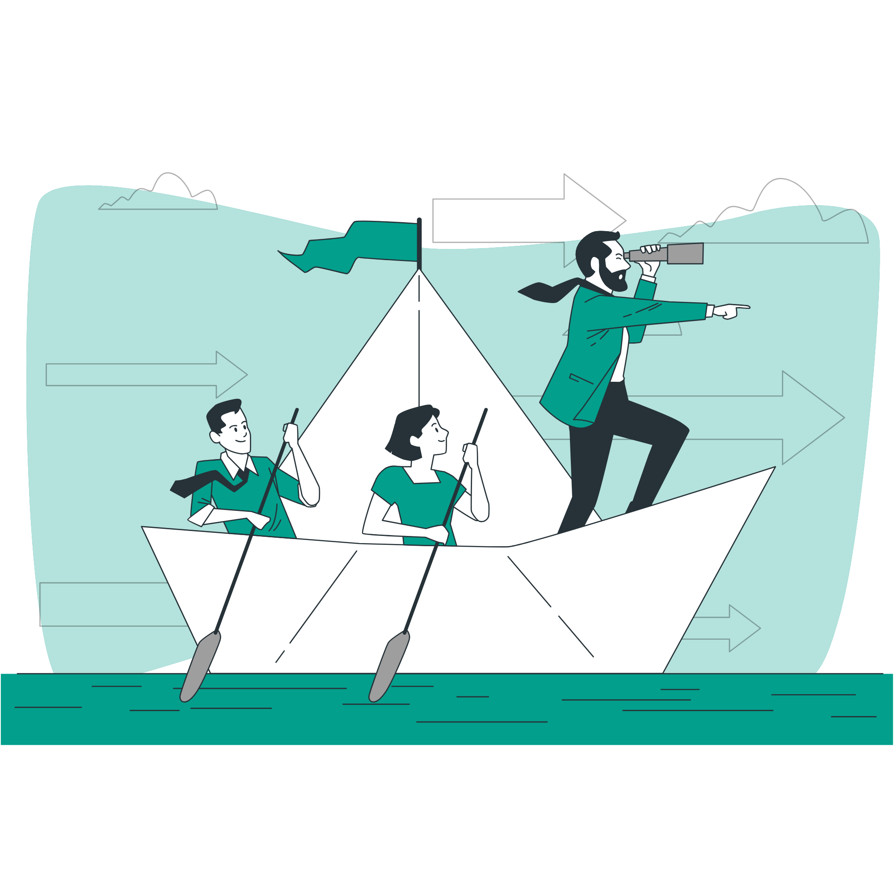
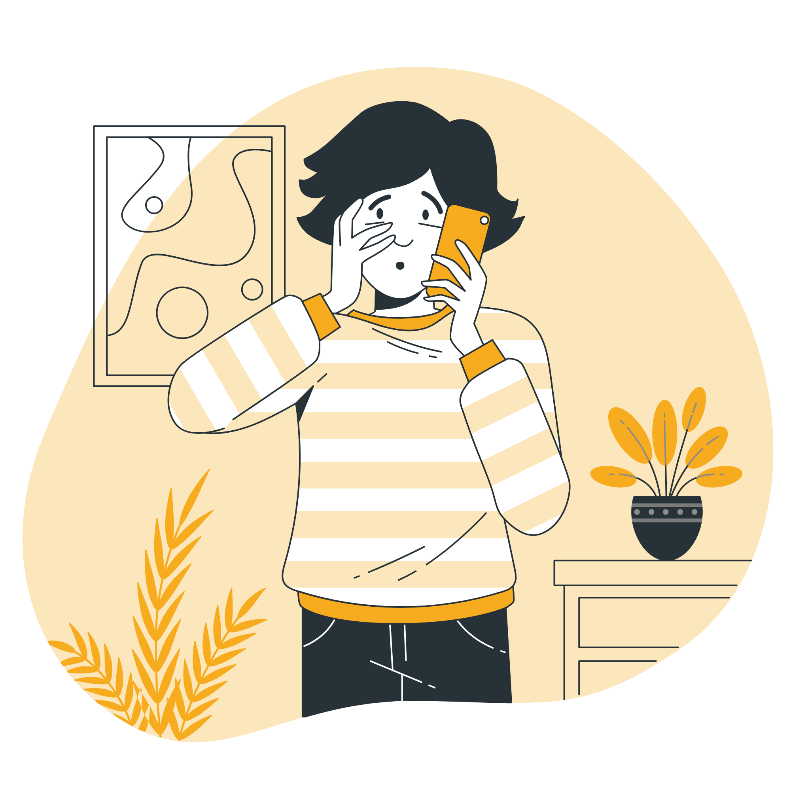
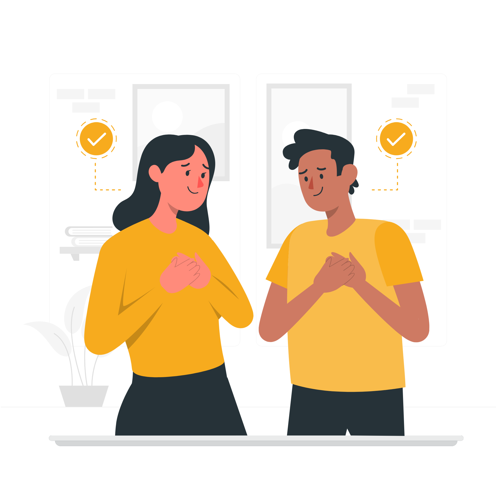
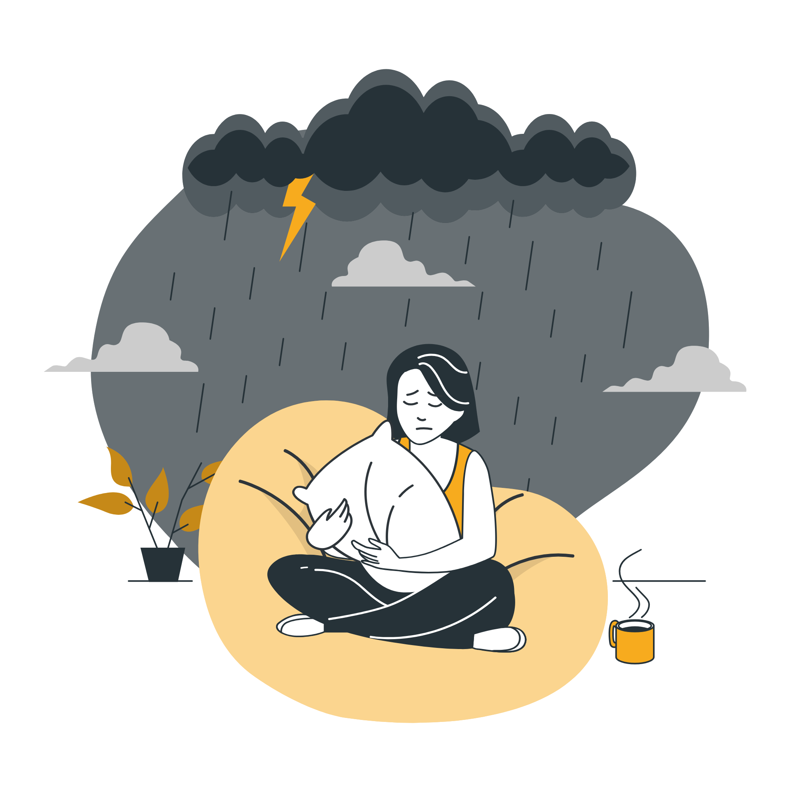

Мои дорогие интересующиеся!
В наше время общество все чаще обращается к психологическому знанию. К сожалению или счастью, под запрос есть всегда и желающие предоставить информацию.
В своей частной практике я часто сталкиваюсь с «любовью» своих клиентов, в процессе поиска ответов на сложившиеся ситуации, прибегать к психологической диагностике.
К сожалению, я крайне плохо отношусь к онлайн диагностикам, которые так часто можно встретить на просторах интернета. И все лишь потому, что многие из них автоматизированы по подсчетам, а алгоритм подсчета неизвестен. Более того, часто неизвестен и автор методики, ее название и показатели валидности и надежности.
Именно потому, в этой рубрике я постараюсь, по возможности, выкладывать краткие, проверенные, взятые из надежных источников, стандартизированные самоотчеты (тесты-опросники). Некоторые из них помогут Вам понять свои состояния и особенности личности.
Пользуйтесь только «на психологическое здоровье», а если вдруг так не выходит, то
Психолог рядом с Вами,
Анна Манько

Самооценка лидерства
Пройти
Уровень стресса
ПройтиУровень самооценки
Пройти
Роли в отношениях
ПройтиИзолированность личности
Пройти